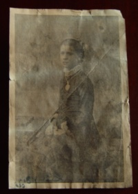
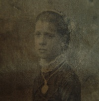
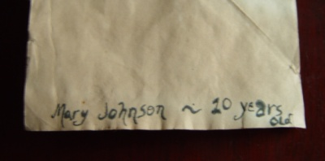

Mary Johnson, Give Us a Sign
a Halloween happening orchestrated by Jason Rohrer
October 28, 2006
The ten-year-old daughter of my neighbor was planning a Halloween party for a few of her friends. I was asked to come up with some scary ideas for the party, and I agreed to tell a story.
When story time came around, one of the girls told a story first, a version of the well-known classic "Resurrection Mary." After that, it was my turn.
My neighbors' house, the site of the party, was quite old---built perhaps one hundred years ago. My job of telling a story was easy, because I had already heard a story about this particular house. Here is my recount of it:
When we were looking to buy a house in Potsdam, our realtor took us through dozens of homes over the course of a year. At some point during these home tours, I mentioned to her that I had an interest in ghosts and asked her if she knew of any haunted houses in the area. She said that she couldn't think of any.
Eventually, our exploration of houses lead us to the house that is now my neighbors' house (the site of the party). We looked at the house, and decided not to buy it, shortly before our would-be neighbors bought it. While touring the house, our realtor mentioned that the house had a bit of a weird history. I pestered her for more details.
In the 1920s, the house was owned by a guy named Hank Johnson, who lived alone. Hank's brother and sister-in-law were killed in some kind of accident, and their daughter was orphaned as a result. She came to stay with Hank, her uncle.
Apparently, Hank was resentful that he got stuck with the job of raising his niece, and he was quite mean to her. He would frequently become angry in reaction to her most minor offenses, like when she would accidentally break a glass in the kitchen. To punish her when he was enraged, he would drag her upstairs and lock her in the attic. He would leave her up there for a few hours.
On a particular February afternoon, while she was cleaning up after lunch, she broke a plate. As usual, an enraged Uncle Hank locked her in the attic. He then stormed out of the house and headed downtown to a bar, where he got quite drunk. On the way home from the bar, in his drunken state, he stumbled on the bridge and fell into the icy Racquette River. A witness to this mishap alerted the police, and they were able to pull Hank from the river, but not before he had been killed by the cold temperatures.
The authorities documented Hank's death and made arrangements to auction off his estate. He had no heirs that they were aware of.
Two weeks later, the authorities came to Hank's house to catalog its contents for the auction. When they opened the door, they were greeted by a foul smell. They followed the odor upstairs to a locked attic door. When they opened the door, the found the body of Hank's niece. She had died from a combination of dehydration and exposure to the cold attic air.
When showing us the attic, our realtor pointed out some scratches on the attic door. Legend had it that the were made by the girl as she tried to claw her way out. She also pointed out some marks on one of the beams---apparently gnawed by the girl as she tried to relieve her intense hunger.
At that point, I asked the girls if they wanted me to show them the scratches and gnaw marks. They all agreed, so we grabbed a flashlight and headed up to the attic.
Upon opening the attic door, the scratch marks we obviously visible, and they looked quite a bit like scratches made by fingernails. We headed up the steps, and I tried to pull the chain to turn on the light---nothing happened. I tried a few more times, and concluded that the bulb must be burned out. We were stuck with the flashlight.
At the top of the steps, I pointed to the supposed gnaw marks on one of the beams, and the girls all agreed that they looked like they were created by teeth. While looking around with the flashlight, I noticed something on one of the rafters: what looked like a small piece of paper, covered with dust. I picked it up and blew the dust off. It was an old photograph of a girl.

The girls grabbed the photograph and headed back down the steps to the brightly-lit bedroom. They concluded that the photograph could be the girl from my story.

Then they noticed that there was was something written on the back:

The writing said Mary Johnson ~ 10 years old. So it must really be a picture of Hank's niece, and her name must have been Mary. "Oh my God," screamed one of the girls, "I'm ten years old!"
"Now that we know her name," I said, "we can try to contact her. Do you want to have a seance?" All but one of the girls thought it was a good idea. Apparently, the experience so far had already terrified one of the guests. The rest of us headed downstairs to get candles and matches.
And that brings us to the point where I turned on my video camera: